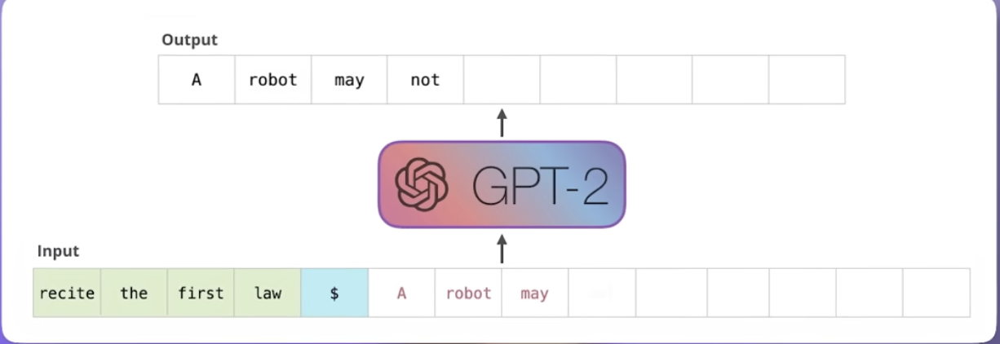
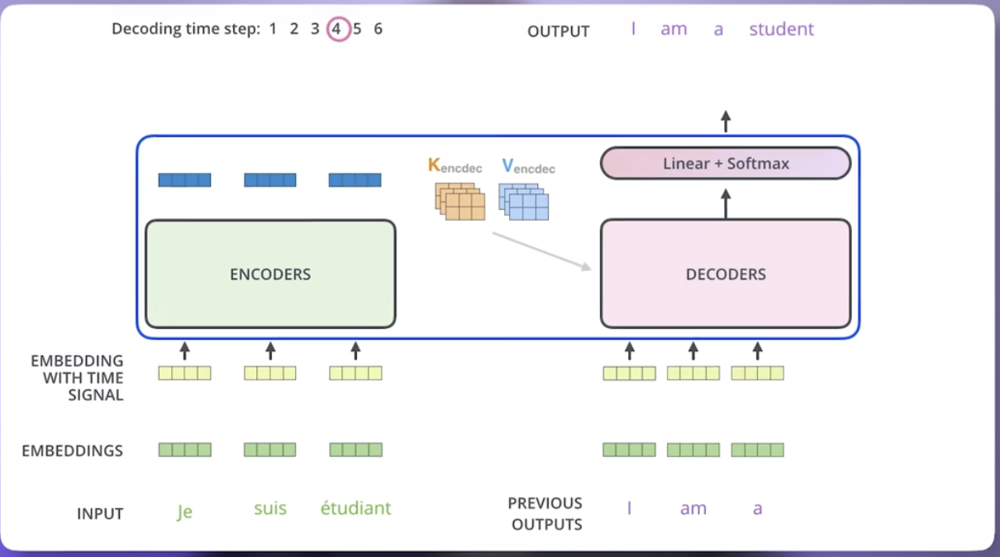
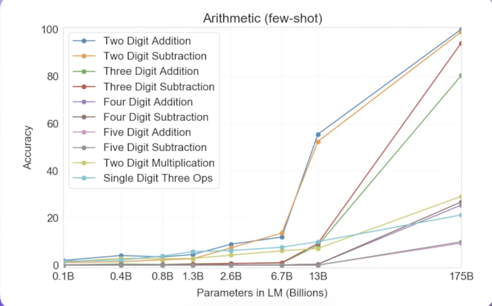
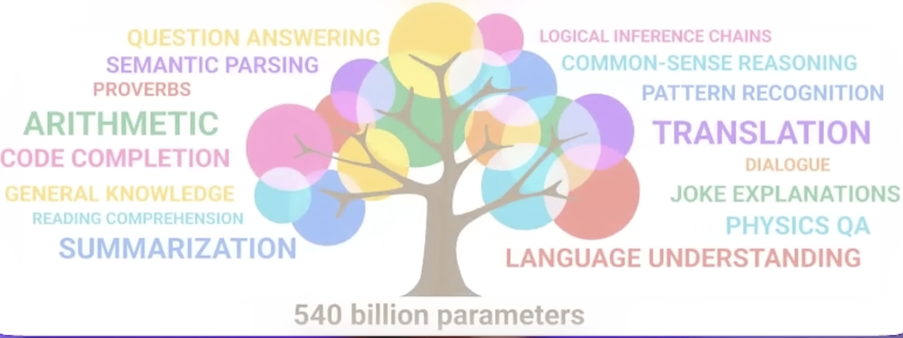
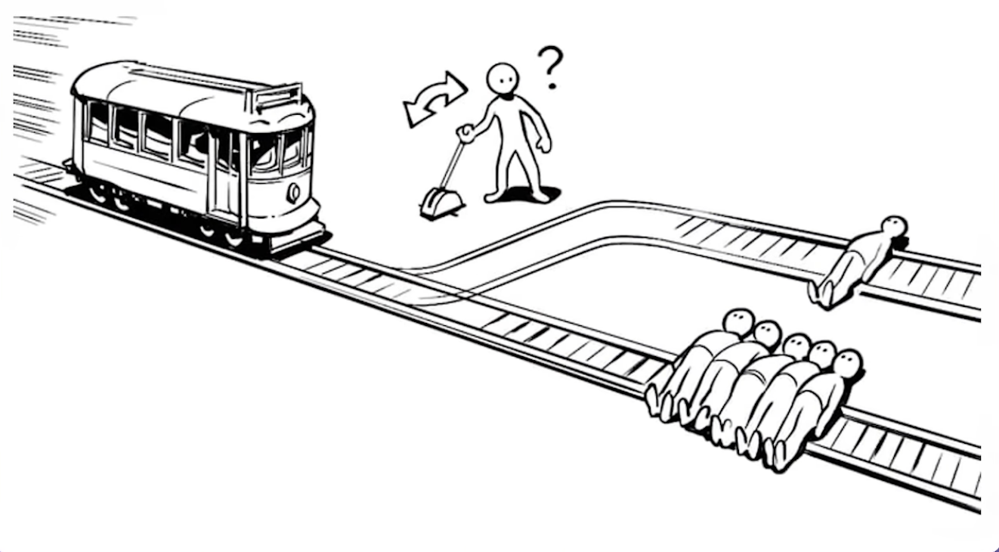
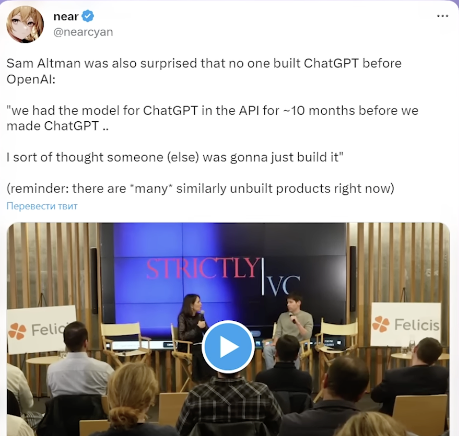
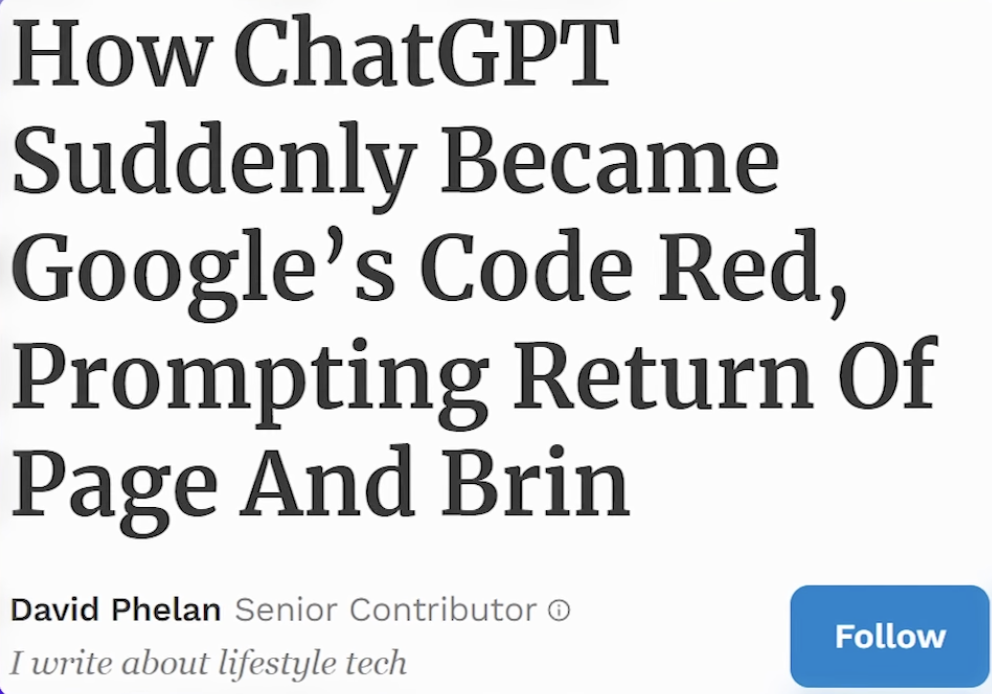

How Neural Networks Work: From T9 to ChatGPT
A Deep Dive into Language Models
Introduction: The Scary Truth
“ChatGPT is just T9 from your phone on steroids.”
- The Core Concept: Large Language Models (LLMs) are essentially advanced “next-word predictors”.
- Evolution:
- Nokia 3310 (Late 90s): Helped finish the current word.
- Early Smartphones (2010s): Suggested the next word, punctuation, and context.
- ChatGPT: The same principle significantly scaled up.

The Probability Game: Predicting the Next Token
Models don’t “know” things; they operate on probabilities.
Example: “I am going to the…”
- High Probability: “Bank”, “Pharmacy”, “Store”.
- Low Probability: “Capybara”.
If your phone suggested: “No, sorry, I’m already going to the… Capybara”, you’d be confused. We expect reasonable continuations based on vast training data.
How It Works: The Math Behind the Magic
At its heart, this is about finding dependencies in data.
Analogy: Height vs. Weight
To predict a man’s weight based on height: 1. Gather data (thousands of men). 2. Plot it. 3. Find the “line of best fit” (Linear Regression: \(y = kx + b\)).

From Simple Equations to Neural Nets
- In the height/weight example, we find coefficients (\(k\) and \(b\)).
- Neural Networks are massive sets of these equations.
- Inputs (\(X\)): The context (words usually converted to numbers/vectors).
- Output (\(Y\)): The next word’s probability distribution.
- Training: Finding the perfect “coefficients” (parameters) to minimize error in prediction.
LLM (Large Language Model) = A model with billions of these parameters (coefficients).
Autoregressive Generation
Why can ChatGPT write whole essays if it only predicts one word?
- Model reads input: “The cat sat on”
- Predicts next word: “the”
- Feeds “The cat sat on the” back into itself.
- Predicts next word: “mat”
- Repeats…
It builds the text word by word.
Creativity & “Temperature”
Why doesn’t it always say the same thing?
Example: “The 44th US President is Barack…”
- Common expectation: “Obama” (Probability ~90%).
- Fact: His full name is Barack Hussein Obama.
- Model Output: Might pick “Hussein” (10% chance).
The model “rolls the dice” (weighted by probability). - Zero Variation: Boring, repetitive loops. - Some Variation: Creative, human-like responses.
2018: GPT-1 & The Transformer Revolution
- Pre-2017: Old Neural Networks (RNNs) read text sequentially.
- Problem: Forgot the beginning of a sentence by the time they reached the end (like humans before coffee).
- 2017: Transformer Architecture (Google).
- “Attention Mechanism”: Looks at the entire text at once.
- Massive scalability and parallelization.
Example: Context Understanding
“Sasha walked on the highway and sucked…” - Old T9: Might suggest inappropriate completions. - Transformer: Knows the proverb “…sucked a dry bread ring (sushku)”.
2019: GPT-2 - Quantity Turns into Quality
OpenAI scaled up MASSIVELY.
- Data: ~40GB of text (8 million Reddit links with 3+ upvotes).
- Comparison: All of Shakespeare is only 5 MB.
- To read 40GB, a human would need 40 years of non-stop reading.
- Parameters: 1.5 Billion.

GPT-2’s Emergent Capabilities
They didn’t teach it how to write essays, just to predict the next word. Yet, it learned to write coherent essays (e.g., about Climate Change).
The “Fish” Disambiguation Task
- “The fish ate the bait. It was tasty.” (What was tasty? The bait.)
- “The fish ate the bait. It was hungry.” (Who was hungry? The fish.)
Humans: 95% accuracy. Small models: 50% (Random guess). GPT-2: 70% accuracy (Self-taught world model).

2020: GPT-3 - The Incredible Hulk
- Parameters: 175 Billion (100x larger than GPT-2).
- Model Size: 700GB.
- Training Data: 420GB (Wikipedia, Books, Internet).
Paradox: The model file (700GB) is larger than the source text (420GB). It “interpolates” and generalizes information.

Emergent Abilities: Math & Translation
Without specific training, GPT-3 learned: - Translation: French/German to English. - Arithmetic: Adding/Multiplying large numbers.

This is the “Transition of Quantity to Quality”.
The Tree of Competence
As parameters increase, abilities “unlock” non-linearly.
- 10B Params: Can’t do math.
- 100B Params: Suddenly solves math problems.
Prompt Engineering: “Whispering” to the Model
How you ask matters.
Example: Math Problems
- Standard Prompt: “Solve this.” -> Often wrong.
- Magic Phrase: “Let’s think step by step.”
- Result: Accuracy skyrockets. The model mimics the reasoning process of a student.
New job market: Prompt Engineers (talking to the model in its own language).

Jan 2022: InstructGPT (GPT-3.5) - Alignment
Problem: Raw GPT-3 is smart but “unhinged” or too literal. - User: “Throw away the trash.” - Model (Literal): Doesn’t know where. Might throw it out the window?
Solution: RLHF (Reinforcement Learning from Human Feedback). - “Training the model like a child”: Good answer = Reward. Bad answer = Punishment. - Humans ranked model outputs. - Model learned to maximize “Human Preference”.
Nov 2022: ChatGPT - The UI Revolution
Technically, ChatGPT wasn’t a massive leap from InstructGPT. Why the Hype? 1. Accessibility: A simple chat interface (vs. API for nerds). 2. Viral Growth: 1 Million users in 5 days. 100 Million in 2 months.
It wasn’t just the brain (Model); it was the body (Product).
Conclusion
- Evolution: From simple T9 prediction to World-Modeling Transformers.
- Scale is Key: More data + more parameters = Emergent Intelligence.
- Alignment: Making the model safe and helpful for humans (RLHF).
Next Time: - GPT-4 capabilities. - Does it actually think? - AI Safety and existential threats.